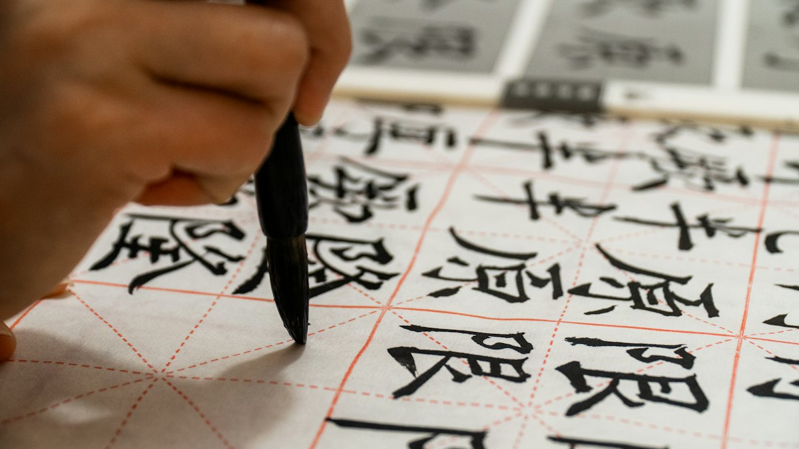
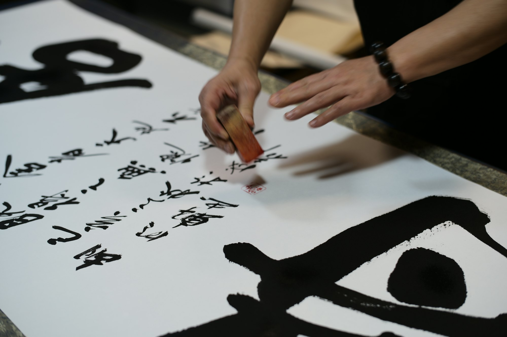
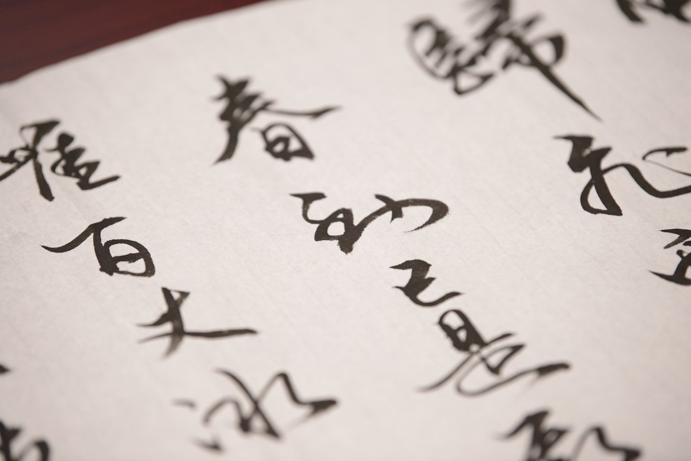
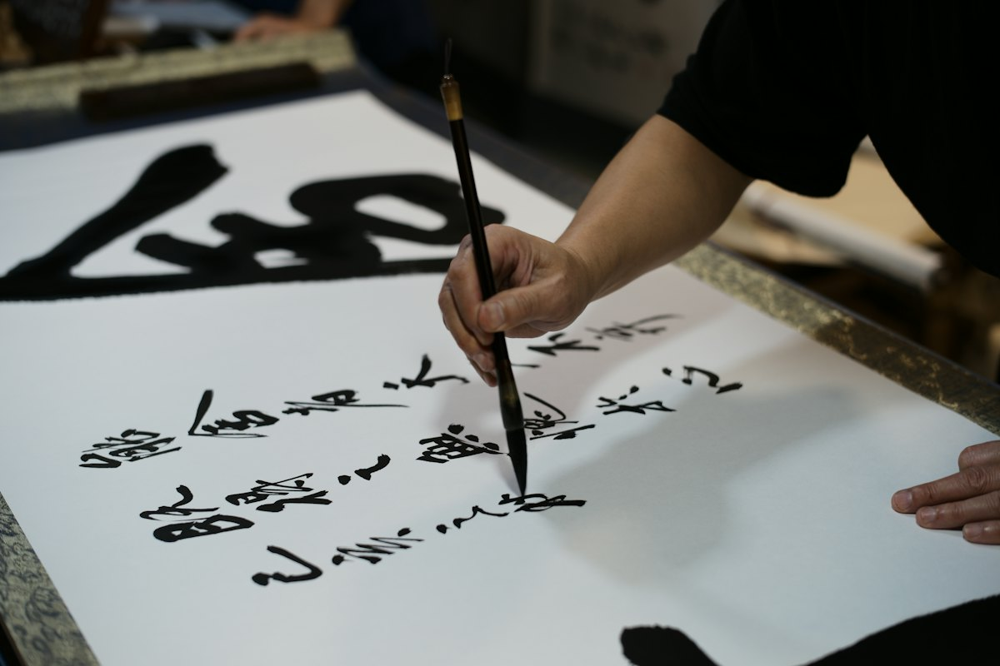
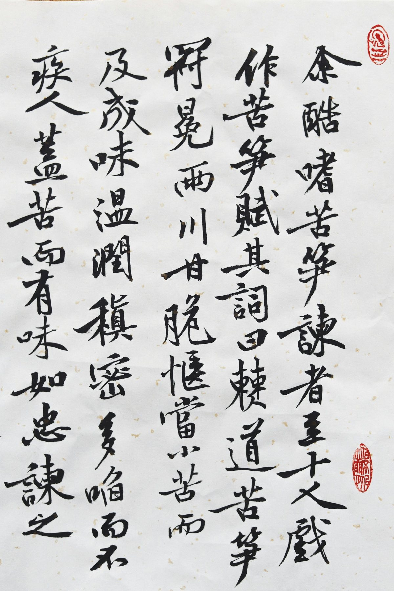

実印・銀行印・認印
手彫りで、一本ずつお作りします。

手彫りの印章専門店 日本橋横山町
創業100余年の印章専門店です。実印・銀行印・認印から、ゴム印、落款印、名刺まで。店内で彫刻作業をご覧いただけることもあります。
手彫りの印章専門店 日本橋横山町
創業100余年の印章専門店です。実印・銀行印・認印から、ゴム印、落款印、名刺まで。店内で彫刻作業をご覧いただけることもあります。
手彫り
一本ずつ、
手で彫る。
スクロールすると、印面を見せてから、紙に押します。
3Dのイメージです。実際の印鑑は、職人が一本ずつ手で彫ります
職人の橋本英典は、銀杏堂印房（旧屋号）で5年間の住込み修業を積み、手彫り印鑑職人として47年。師匠は、現代の名工「卓越技能章」を受けた甲斐雄山です。
その技術と信用を受け継いだ職人と、それをまた受け継ぐ息子で、一本一本丁寧にお作りします。2024年7月16日、旧店舗から600メートルの場所へ移転しました。

手彫りで、一本ずつお作りします。

ゴム印は一個からご注文・配達します。

作品に押す落款印も承ります。

…
| 営業時間 | 9:00〜18:00 |
|---|---|
| 土曜 | 前日（金曜）までのお電話予約で対応 |
| 休業日 | 土曜・日曜・祝日 |
ご注文やご相談は、お電話・FAX・メールで承ります。